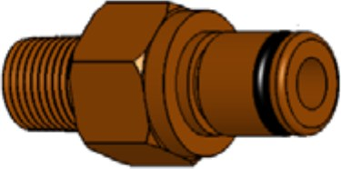
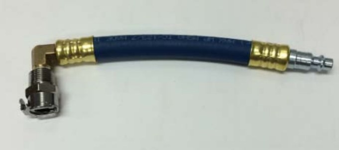
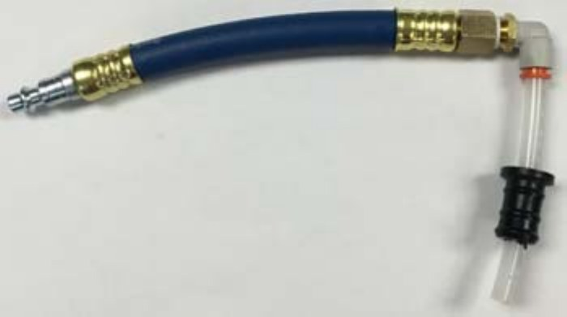
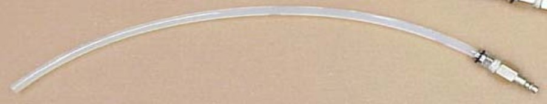

Doc no. MOC-TSB-16-03 // Vol. 16 No. 03 // Feb 12, 2016 // Transmission
GM ATF Adapter Kit
MOC has developed a new transmission adapter kit for use on the GM 6L80 transmissions to bypass the internal thermal valve and reduce the service time (Part No. 94916). This kit includes 4 adapters: (1) an adapter to connect to the line pressure port (Part No. 94796); (2) a short 90 degree adapter hose for the tight space around the pressure port (Part No. 94898); (3) an open hose adapter to be inserted into the transmission dipstick tube, for the vehicles that have dipstick tubes (Part No. 95669); and (4) a filler plug to be inserted into the filler plug hole, for vehicles that do not have a dipstick tube (Part No. 94922).
What's new
Contact
For more information, contact the Machine & Equipment Department at 866.244.6621.




Part numbers
| Part No. | Description | Notes |
|---|---|---|
| 94796 | Adapter, ATF Pressure Port, 1/8" NPT Hose | |
| 94898 | Assy, Pressure Port, 90° ATF | |
| 95669 | Adapter, ATF Dipstick, Open Hose | |
| 94922 | Adapter, GM Trans Filler Plug | |
| 94916 | GM ATF Adapter Kit |